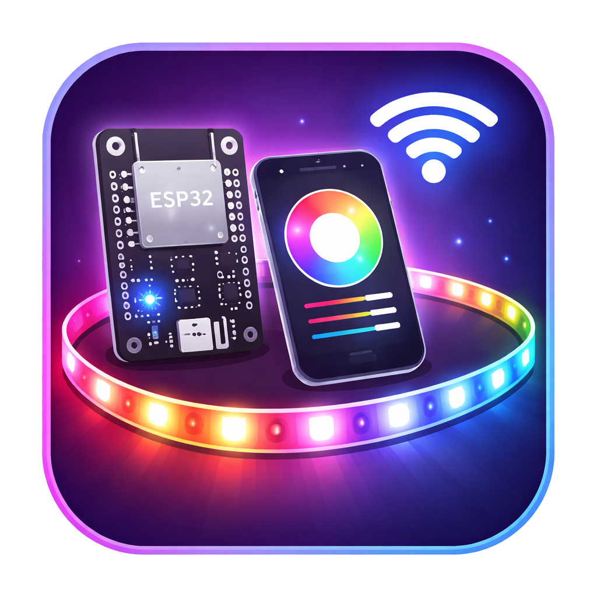

ESP32 LED Controller
ESP32 LED Controller is a Wi-Fi lighting system built as a standalone product, not just a browser demo.
The interface is served directly from the ESP32, the firmware renders animations on-device with
FastLED, and the strip keeps running smoothly even if the browser disconnects.
Overview
This project combines embedded firmware and a browser-based dashboard into one self-hosted LED
control system. The frontend files are stored in LittleFS and served by the ESP32,
the control layer talks to device endpoints such as /status, /state,
/apply, and /off, and the firmware owns the actual animation runtime.
The result is a controller that feels polished on the surface while remaining technically solid
underneath.
The main loop updates roughly every 10 ms for fluid rendering.
Default hardware profile targets an 88-pixel WS2813 strip.
Status, state, apply, and off cover the main control flow.
Special categories rotate enabled submodes automatically.
Technical Stack
Project Story
The goal was to make an LED controller that feels like a finished connected product while still respecting the realities of embedded hardware and local-network control.
Off-the-shelf LED controllers often limit what you can build. They restrict individual LED control, lock you into preset modes, and make it difficult to add custom animations or fine-tune behavior.
The goal was to build a fully customizable DIY LED controller from scratch. So I can create any lighting effect I want and evolve the feature set over time without artificial constraints.
Build a web-based interface that controls the LED strip over Wi-Fi through an ESP32, with a polished, responsive GUI that exposes granular control down to individual LED pixels.
The controller should feel like a finished product while staying flexible enough to support new modes, custom animations, and hardware changes without requiring a complete rebuild.
A fully functional LED controller with a self-hosted web UI, real-time Wi-Fi control, on-device animation rendering, themed mode sequencing, and preset management.
The system runs independently on the ESP32, serving its own interface and handling all lighting logic without external dependencies making it simple to extend, tune, and adapt to new use cases.
How It Works
The interaction model is intentionally simple: the browser handles visibility and control, while the ESP32 handles state, timing, and pixel output.
This is a DIY project for self use and not for mass production.
Join the device on the local network
The controller becomes reachable through http://led.local or its local
IP address using Wi-Fi plus mDNS.
Load the frontend from the ESP32
HTML, CSS, and JavaScript are served directly from LittleFS, so the
device ships its own control panel.
Read live status and current state
The interface checks routes such as /status and /state to
populate controls, connection indicators, and the current lighting setup.
Apply mode and parameter changes
Updates from sliders, color controls, mode pickers, and category tools are sent back through the control API without moving rendering responsibility to the browser.
Render frames on-device
The firmware computes the LED frame, writes pixels with FastLED, and
keeps animation playback smooth at roughly 100 Hz.
Rotate themed sequences automatically
Special categories can cycle through enabled submodes every 10 minutes in the order defined from the UI.
Browser as control layer
The browser never becomes the animation engine. Its job is to read state, send user intent, and preview settings. The ESP32 keeps the real runtime alive, which is why the strip continues animating cleanly even after the control page closes.
Key Features
The project balances maker flexibility with a product-style control experience so the system feels good to operate, not just technically impressive.
Standalone Animation Engine
Effects are generated directly by the firmware, so timing, smoothing, and playback stay consistent regardless of browser state or device refresh rate.
Real-Time Wi-Fi Control
Power, mode, and parameter changes happen over the local network, giving the strip a responsive remote-control workflow without cloud dependence.
Deep Per-Mode Tuning
Standard modes expose controls for color, brightness, speed, saturation, smoothness, wave length, spacing, direction, and intensity where relevant.
Preset Save / Load / Delete
Browser-side localStorage keeps favorite looks close to the user,
making it fast to return to a known lighting setup with minimal friction.
Special Mode Sequencing
Dedicated themed pages let you enable or disable submodes, reorder them, reset category defaults, and start ordered sequences from the interface.
Responsive Product UI
The dashboard is built to work across desktop and mobile, with live connection status, strip preview, and touch-friendly controls where they matter most.
Standard Modes Showcase
The standard lighting page covers the everyday interaction model: pick a mode, tune its parameters, preview the result in the browser, then let the ESP32 keep the strip moving.
Solid
A clean static look for ambient lighting, accent colors, or single-tone room scenes.
Rainbow
Continuous hue motion for brighter, more playful output with control over pace and feel.
Wave
Moving bands of light sweep across the strip with more control over spacing and rhythm.
Fade
Soft transitions between colors for mood lighting and lower-noise visual motion.
Strobe
Punchier pulses and flashes for energetic scenes where timing and intensity matter.
Chase
Repeating moving segments create directional motion that reads well on longer strips.
Special Modes Showcase
Special modes turn the controller into more than a list of single effects. Each category acts as its own small playlist system, giving the browser a richer orchestration role while the firmware keeps playback autonomous.
Christmas
Designed for festive color palettes and celebratory motion, with sequencing tools that let the user build a more dynamic holiday loop from the browser.
- Enable or disable individual submodes
- Reorder playback to shape the festive pacing
- Reset the category back to its default ordering
Fireplace
Built for warmer ambience, softer flicker, and lower-intensity scenes that need a more believable glow than a simple orange fade can provide.
- Curated for warm-room mood and ember-style motion
- Ordered submode playback keeps the look evolving
- Ideal for slower transitions and comfort lighting
Sex Trip
A mood-driven category centered on darker atmosphere, richer color transitions, and more intentional pacing for intimate or low-light scenes.
- Built around slower, more immersive visual flow
- Supports manual sequencing and submode ordering
- Starts ordered playback directly from the UI
Theme logic stays inside the firmware
The UI decides which themed submodes are enabled and in what order they should run. The ESP32 then handles the timed rotation itself, switching enabled submodes every 10 minutes without requiring the browser to stay open.
Technical Architecture
The architecture is intentionally split so the browser can feel modern and convenient while the ESP32 remains the trustworthy runtime owner. That separation is what makes the controller feel both premium and technically credible.
Browser Interface
Responsive HTML, CSS, and JavaScript UI for live controls, strip preview, power state, presets, and themed category tools.
LittleFS Hosting
Frontend files live on the device itself, removing the need for a separate web server or companion app.
Network Discovery
Wi-Fi connectivity plus mDNS makes the controller discoverable through
led.local for friendlier local access.
Control Endpoints
Small HTTP routes expose state reads, state updates, and immediate power control without leaking rendering complexity into the frontend.
Animation Runtime
The loop tracks mode settings, computes each frame on-device, and preserves playback continuity even when the UI is no longer connected.
Hardware Output
Default output targets a WS2813 strip on GPIO 4 with 88 LEDs and GRB color order, while keeping the firmware ready for profile changes.
Installation / Setup Overview
The setup flow stays maker-friendly: flash the firmware, upload the web assets, connect the strip, and the controller becomes a self-contained lighting endpoint on the local network.
Flash the ESP32 firmware
Upload the Arduino / C++ firmware that contains networking, routing, state handling, and animation logic.
Upload frontend assets to LittleFS
Store the browser UI files on-device so the controller can serve its own interface.
Wire the default LED profile
Connect the WS2813 strip and use the default profile or adjust firmware values if the strip length, pin, or color order differs.
Join the local network
Once Wi-Fi is active, reach the controller by led.local or its assigned IP.
Open the UI and tune the strip
Pick modes, save presets, manage special categories, and leave playback running on the device.
Default hardware profile
The current baseline setup uses a WS2813 LED strip on GPIO 4
with 88 LEDs and GRB color order.
API / Control Workflow
The API surface stays intentionally narrow so the browser has exactly what it needs to be useful without duplicating firmware responsibilities.
- The browser boots from device-hosted files and checks if the controller is reachable.
/statushelps surface connection and live state context./stateis used to hydrate the UI with the active mode and parameter values.- User changes are submitted through
/applyso the firmware can update runtime state. /offprovides an immediate power-off path without removing the device from the network.- The firmware continues frame generation locally and pushes updates with
FastLED.show().
Status
Used to check whether the controller is online and to expose high-level runtime feedback.
State
Returns the active mode and the settings needed to render the browser controls accurately.
Apply
Accepts updated lighting parameters so the runtime can change behavior without leaving the device-hosted control flow.
Off
Provides a direct shutdown command for the strip while the controller itself remains ready.
/status - connection and runtime snapshot
/state - current lighting state
/apply - apply updated parameters
/off - immediate strip power offWeb Interface
The UI is designed to make an embedded controller feel product-grade: dark ambient surfaces, live status, bright contrast, and visual cues that suggest the strip is actively responding in real time.
Project Links
Download builds, browse the source, or head back to all projects.